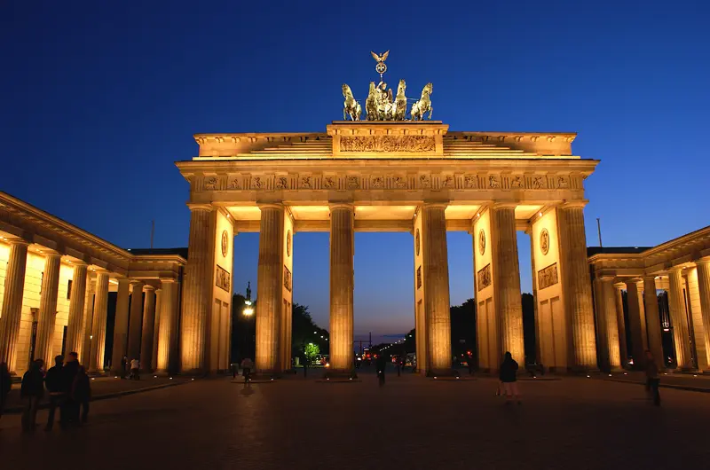
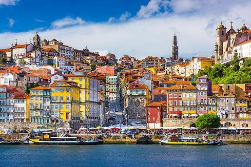
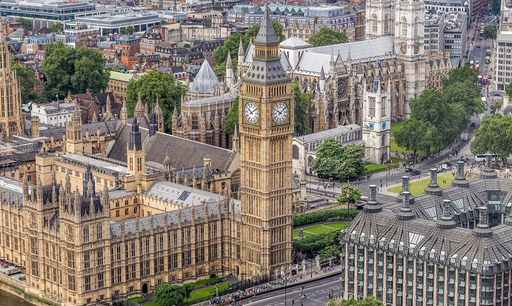
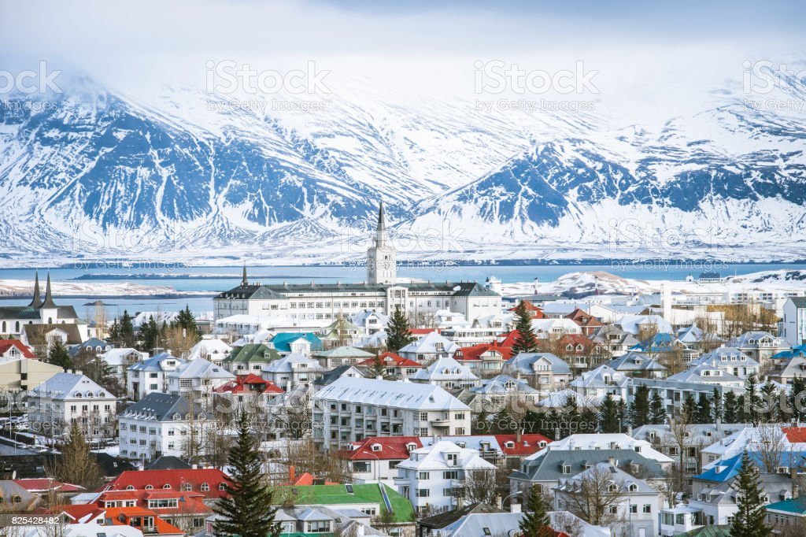

En Alemania se da la mano a modo de saludo, un saludo que se reparte entre amistades y gente que no se conoce por igual. Cero complicaciones. A quienes provienen de Latinoamerica y los países del sur de Europa, este saludo nos resulta algo frío, pero al final te acabas acostumbrando e incluso se agradece. Sobre todo después de la pandemia, otra de las costumbres es brindar mirándose directamente a los ojos. Cuando se brinda, además de decir Prost! o Zum Wohl!, es obligatorio hacer contacto visual directo con cada persona con la que se brinda, y ¡hay que chocar vasos con todo el mundo! Si no se hace se corre el riesgo no solamente de quedar como una persona grosera, si no que caerá sobre el que no brinda correctamente la «maldición de siete años de mal sexo», otras de las tradiciones es dar chuches el primer dia de cole, otra es quitarse los zapatos al entrar a una vivienda, tambien se separa la basura a niveles insospechados(reciclaje) y por ultimo alguna que otra tracición es el Oktoberfest. <--IMAGEN DE ALEMANIA--> 
Alguna de las costumbres y tradiciones son que Gran parte de la población en Portugal, habla español,los portugueses son conocidos por su hospitalidad y calidez en el trato al visitante, además se distinguen por ser educados y tranquilos en el carácter, los saludos siempre son correctos y afables. Darán la mano a las personas que no conocen y se abrazarán y saludarán con un beso en la mejilla cuando se trate de amigos o familiares,en portugal se considera de buena educación dejar un poco de comida en el plato cuando se ha terminado de comer,Son muy expresivos a la hora de dar a conocer sus costumbres,les gusta mostrar sus bailes y trajes en coloridas procesiones y romerías. La Navidad en Portugal se celebra de una forma diferente dependiendo de la zona en la que nos encontremos. En la zona norte, los ritos y tradiciones en torno a estas fechas, están muy influenciadas por las tradicionales normandas, con un toque mas pagano. En la zona centro y en el sur,las tradiciones están más vinculadas a la religión católica. <--IMAGEN DE PORTUGAL--> 
En un país como España, las reglas sociales sobre el apretón de manos o los dos besos están bastante claras. En el Reino Unido, los saludos pueden ir desde un formal apretón de manos hasta un abrazo, un leve movimiento con la cabeza o incluso un simple “Hello”,otra constumbre que se hace alli es mojar una galleta en el té antes de comérsela, hay debates sobre que galletas es mejor para mojar en el te, Muchas personas acuden al pub que frecuentan habitualmente y en el que conocen tanto al personal como a los demás clientes,otra constumbre es pagar las bebidas por rondas, es decir, que en vez de pedir individualmente tu consumición, con frecuencia se piden (y se pagan) las de todo el grupo. Tus acompañantes te devolverán el favor cuando te inviten a tu próxima bebida, y a las que le sigan, dependiendo de cuántas personas formen el grupo, pero eso sí, ten cuidado: si no estás tan acostumbrado al alcohol como tus colegas, salir con un grupo grande puede acarrearte una buena resaca al día siguiente. <--IMAGEN DE REINO UNIDO--> 
En primer lugar, la tradición islandesa más importante es el uso de patronímicos, la composición del apellido con el nombre del padre o madre y la palabra hijo (son) o hija (dóttir), las tradiciones islandesas muy ligadas a la pesca (también se paga impuestos por pescar, dependiendo del prestigio del río y ya hay salmones conocidos porque es costumbre volverlos a liberar después de hacerse la foto),también es tradicional la ganadería y la agricultura (gran parte en invernaderos).Por eso, la pesca y la caza son deportes muy populares, Sin embargo, Islandia no es solo la cosmopolita Reykjavik, en cuanto te alejas unos kilómetros, empiezas a ver extensiones de terreno sin urbanizar, granjas desperdigadas, animales y bolas de silo.Otra tradición islandesa es dejar los cochecitos de bebé en el balcón (bebé incluido), aunque esté nevando. También en la calle mientras los padres están dentro de la cafetería. Creen que así se hacen fuertes y los preparan para los temibles inviernos, cosas más importantes(Comida). <--IMAGEN DE ISLANDIA--> 
En cuanto a la cocina turca incluye muchos guisos diferentes de verduras y carne (cordero y carne de vacuno principalmente); platos de brocheta borek, y dolma; y un pan de masa fermentada que se come con casi todas las comidas, El borek es una masa
hecha de muchas capas finas de masa intercaladas con queso, espinacas y/o carne molida. Kebab es la palabra común para la carne asada en trozos o rebanadas en un pincho o como albóndigas en una parrilla. Dolma es el nombre genérico para los platos
hechos de vegetales (por ejemplo, tomates y pimientos) y hojas (por ejemplo, uva, repollo y berenjena) que están rellenos o envueltos alrededor de arroz o pilaf bulgur, carne molida y especias. Los turcos son especialmente aficionados a las berenjenas,
Los turcos esperan que los adultos se casen y tengan hijos, y la gran mayoría lo hacen. Debido a que los hombres no deben bajar el nivel de vida de sus esposas, se supone que no deben casarse con mujeres de una clase económica superior,la etiqueta
formal es fundamental en la cultura turca, ya que rige la mayoría de las interacciones sociales y el uso del espacio. La cultura turca tiene una fórmula verbal exacta para prácticamente todas las ocasiones.
<--IMAGEN DE TURQUÍA-->